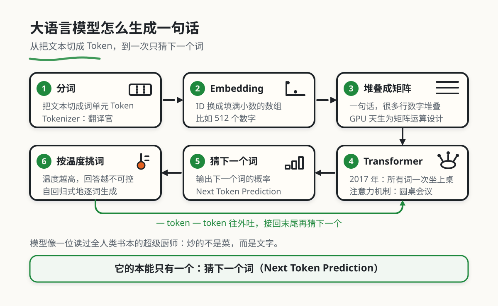

大语言模型工作原理
从一句话怎样被切分开始，接着看向量、注意力、训练和生成。本章可静态阅读；要动手观察，打开十二课手绘路线。实验、人工示意和实际模型资料会分别标明。
0. 引言：从人类语言到机器计算
输入“她推开窗，看见”，模型怎样接出下一段？以自回归语言模型为例：文字先编码成 token ID，再查表得到向量，经过利用前文的网络计算，得到下一 token 的分数。分数转换成分布后，程序按指定策略选出一个 token，追加到输入，继续下一步。
这解释了生成的过程，也带来一个使用上的限制：候选概率很高，只说明模型在当前输入下倾向于这样接；窗外到底是什么，还需要观察或材料依据。先做 L02 生成实验，再回来看每一步。
1. 第一步：翻译 (Tokenization)
这里的“翻译”指编码，不是把中文译成另一种语言。Tokenizer 按自己的词表和规则，把文本变成一串编号。一个片段可能是单词、空格与词的一部分、标点，也可能只是某个字符的部分字节。
1.1 分词概述
英文有空格，也不能直接按单词数计算 token；空格可能和后面的词一起编码。中文的一字一 token 同样不成立。要估计上下文长度和 token 费用，需按实际模型使用的编码及产品计费规则计算。

Tokenizer (翻译官)
BPE（字节对编码）是一类构造子词词表的方法。具体片段与 ID 要看所用编码，不能只写“GPT 的 tokenizer”就认为编号唯一。
下面保留原章的中英混合输入，使用锁定的 js-tiktoken@1.0.21 本地重算。表中展示 cl100k_base 的 ID 与原始 UTF-8 字节；空格、英文句号后的空格和换行都没有删去。数字不推断 DeepSeek V4.1 Flash 或 Kimi K3 当前采用的词表。
"The quick brown fox jumps over the lazy dog. \n今天天气真不错！"
| token ID | UTF-8 字节（十六进制） | 可独立解码时的片段（JSON 转义） |
|---|---|---|
| 791 | 54 68 65 | "The" |
| 4062 | 20 71 75 69 63 6b | " quick" |
| 14198 | 20 62 72 6f 77 6e | " brown" |
| 39935 | 20 66 6f 78 | " fox" |
| 35308 | 20 6a 75 6d 70 73 | " jumps" |
| 927 | 20 6f 76 65 72 | " over" |
| 279 | 20 74 68 65 | " the" |
| 16053 | 20 6c 61 7a 79 | " lazy" |
| 5679 | 20 64 6f 67 | " dog" |
| 13 | 2e | "." |
| 720 | 20 0a | " \n" |
| 37271 | e4 bb 8a | "今" |
| 36827 | e5 a4 a9 | "天" |
| 36827 | e5 a4 a9 | "天" |
| 30320 | e6 b0 | （部分 UTF-8 字节） |
| 242 | 94 | （部分 UTF-8 字节） |
| 89151 | e7 9c 9f | "真" |
| 16937 | e4 b8 8d | "不" |
| 29826 | e9 94 99 | "错" |
| 6447 | ef bc 81 | "！" |
本例中的编码从字节构造片段，可以把有效 UTF-8 文本表示成 token 序列。某个片段若不是完整 UTF-8 字符，不能单独解码成汉字；应拼回全部字节再解码。不要把这项性质泛化为所有 tokenizer 都没有未知词，也不要据此断言模型理解了任意生僻字。特殊控制标记和非法输入的处理另有规则。
在 L01 分词观察里可以切换编码，查看四组固定输入的 ID、字节和无损还原；本章混合例的完整快照另见复算数据。
2. 核心难题：让计算机“计算”语言的实现
模型需要对序列做数值运算，但 token ID 首先是索引。假设两个片段的 ID 是 10 和 20，不能因为差值是 10，就推断它们的意义接近或疏远。
2.1 不用简单的 ID的原理
一种表示是 one-hot：词表有 V 项，就用 V 维向量，并在所选编号处放 1，其余位置放 0。它把不同编号分开，但本身不编码词义关系。实际实现可以直接按 ID 查嵌入表，不必真的为每个 token 构造一个很长的 one-hot 数组。
2.2 解决方案：Embedding (稠密向量)
嵌入表把每个 ID 映射为 d 维数值向量；这些数通常参与训练，被参数更新改变。d 由模型结构决定，不是所有模型都固定为 512 或 4096。
例如，人工三维向量 [0.8, 0.1, 0.9] 可以用于练习点积或余弦，但不能把三个分量分别命名为“水果、红色、甜”。实际模型的语义关系分布在很多维度中；未经专门分析，不能替单个维度指定这类解释。
同一个 token 的初始查表向量，与经过上下文计算后的表示也要分开。把“银行”放进不同句子，后续表示可以因前文改变。二维图只是高维向量的投影，图上接近不保证完整向量接近。用 L03 向量实验核对三维余弦与二维投影的差别。
3. 从 单词 到 矩阵
这里的计算单位仍是 token，不保证等同于一个单词。把多个位置的嵌入向量按行排列，就可以得到一个矩阵。
3.1 是矩阵的动机
N 个 token、每个 d 维，输入表示可以写成 N×d 的矩阵。训练和推理中的许多操作能写成矩阵乘法，这便于使用 GPU 等硬件的并行算力。模型也可以在 CPU 等设备上执行；“只有拼成矩阵才能计算”或“GPU 只为语言矩阵设计”都不准确。
3.2 完整流水线
- 文本编码成 token ID，保留顺序及必要的特殊标记。
- 按 ID 查嵌入表，结合位置相关信息，形成输入表示。
- 网络逐层处理上下文，输出下一 token 的分数。
- 分数转换为候选分布，程序选择 token 并追加；遇到停止标记或长度上限时结束。

3.5 模型概述
可以把语言模型写成带参数 θ 的函数：输入 token 序列，输出下一 token 的分数或概率。参数决定计算怎样进行；训练数据用于构造目标并调整这些参数，不是每次回答都从模型里取出一段原文。
训练时，程序比较预测与目标，计算损失和梯度，再更新参数。普通推理读取参数进行计算，不执行同样的梯度更新。聊天内容增加、产品保存记忆和模型重新训练，是三件不同的事。L05 训练实验会实际更新一个小型 bigram 模型，并显示预测按钮不改参数。
用两个候选算一次更新：为了只观察更新方向，暂把“水、茶”的两个分数直接作为可训练参数，初始都是 0，softmax 后概率各为 0.5。目标是“水”，交叉熵 L=-ln p(水)=0.693147。分数的梯度为“预测概率减目标”：[-0.5,+0.5]。
学习率取 0.4，用 新参数=旧参数−学习率×梯度，得到分数 [0.2,-0.2]。重新计算，p(水)=0.598688，损失约为 0.513015。负梯度让目标分数上升；这不是把“水”写进答案库。真实网络还需要把梯度沿计算图传回权重，本例省略了这部分。

预训练数据有来源、筛选方式和时间范围，覆盖也不完整。模型不可能仅凭“训练过很多文本”就保证知道任何事实；想核对具体时间、地点或数字，应回到可检查的材料。
4. 进化之路：从 RNN 到 Transformer
RNN 与 Transformer 是处理序列的两类结构。下面比较信息怎样流动；速度和效果还受模型规模、实现、任务与硬件影响。
4.1 以前的笨办法：RNN（传话游戏）
RNN 按位置更新隐藏状态：第 t 步结合当前输入与上一步状态，再把新状态传到后一步。同一序列的这条依赖链限制了沿时间维的并行；不同样本及某些内部计算仍可以并行。
较早的信息要经过多个状态更新才能影响后面的输出，学习长距离依赖可能困难。LSTM、GRU 等结构用于缓解这类问题。不能从这个描述推出所有 RNN 都慢，或每次都会“忘掉”远处信息。
4.2 现在的天才设计：Transformer（圆桌会议）
Transformer 的自注意力让一个位置按查询 Q 与键 K 的匹配权重，汇总各位置的值 V；还包括前馈网络、归一化、残差连接等部分。Attention Is All You Need给出了原始结构。
“圆桌会议”只说明位置之间可以直接建立联系，不能理解为所有位置都能看见未来。自回归解码器在训练时使用因果掩码：预测当前位置之后的内容时，只能利用允许的前文。输入序列已知时，多个位置的训练计算可以并行；逐个输出未知 token 的生成过程仍存在先后依赖。

上下文窗口是输入容量限制，不是“无遗忘”的承诺。即使信息在窗口内，模型也可能漏用或用错。Lost in the Middle在特定模型与任务中观察到相关信息位置改变会影响效果；它不是对所有新模型的统一跑分。
为什么还需要“位置”信息？
“我爱你”和“你爱我”用到相似片段，但顺序改变了关系。位置相关机制帮助网络区分顺序。原始 Transformer 使用位置编码；其他模型可以采用不同的位置表示方式，不能都画成相同的“贴号码牌”实现。
在 L04 因果注意力选择第二个位置，只改第三、四个位置的 V，再比较输出。实验在 softmax 前屏蔽未来位置，所以修改后的未来 V 不会改变当前单头输出。
4.3 效率黑科技：KV 缓存 (KV Cache)
在常见的自回归注意力推理中，程序可缓存前面位置在各层产生的 K、V。处理新 token 时复用这些缓存，避免每一步重算全部旧位置的 K、V；新查询仍需与可用的缓存进行注意力计算。
要分清输入预填充（prefill）与逐 token 解码（decode）。前者处理已有输入，后者在每步生成后继续。缓存大小通常随保留的 token 数、层数、KV 头数、批量和数值精度增长；模型权重没有因此增加。窗口、压缩或潜在表示等实现会改变缓存方式，不是所有模型都按同一公式存储完整 K、V。
显存还包含权重、激活、临时工作区等部分。因此“长对话只因为 KV Cache 而占显存”过于绝对。缓存主要是推理状态，不等于训练后永久记住了对话。
缓存复用还要求前缀和模型计算条件匹配。前面的 token 改了，不能把按旧前文算出的缓存直接当成新输入的结果；具体策略可查 Transformers 缓存说明。
5. 揭秘：从“续写”到“对话”
自回归对话模型仍然逐步生成 token。它为何倾向于回答问题，需要同时看训练数据、优化目标与输入格式。
5.1 本能：疯狂续写
基础模型接受前文后继续生成。如果训练中见过题目列表，给它一个问题，它也可能接着写另一道问题。这个例子说明输出会受数据分布和上下文影响，并不表示每个基础模型都会这样回答，也不能据生成形式判断它完全没有推理能力。
5.2 技巧：用“剧本”来对话
应用通常把角色与正文组织成消息，再按模型要求的聊天模板编码成 token 序列。例如，下面只示意用户和助手的边界，不是所有模型通用的真实控制 token：
<user>你好</user><assistant>
模板标明谁说了什么、从哪里开始生成。遵循指令的行为则与预训练、监督微调和后续优化有关，不能靠加上 assistant 标签就让任意模型获得相同能力。训练和推理采用不匹配的模板也会影响行为，具体格式应查所用模型的文档，见 Hugging Face 聊天模板说明。
5.3 深度交互演示
可操作入口是 L06 指令跟随练习：先比较预训练、示范与偏好数据的作用，再检查一份礼貌回答中的地点有没有来源。页面的回答由课程编写，不是运行多个真实训练检查点得到的结果。
静态阅读也能完成判断：如果通知没有地点，回答却写“请到城市图书馆参加”，应指出材料不足；“语气礼貌”不能补上这条证据。
6. 从“胡说”到“好助手” (Alignment)
对齐训练用于调整行为，使输出更符合任务要求与所采用的偏好标准。不同模型的训练配方不同；下面解释常见路线，不把它写成 DeepSeek V4.1 Flash 或 Kimi K3 已公开确认的具体训练记录。
**SFT（监督微调）**使用输入和示范输出训练模型。示范可以包含翻译、回答问题、规定格式等任务，来源也不只限于人类专家手写。下面是人工教学数据，JSON 本身不执行训练：
{
"messages": [
{ "role": "user", "content": "把“你好”翻译成英文，只写译文。" },
{ "role": "assistant", "content": "Hello." }
]
}
偏好优化使用回答之间的选择或评价信号调整行为。人工示例可以写成：
{
"prompt": "通知没有提供地点，请整理活动安排。",
"chosen": "地点：材料未提供，需要向组织者确认。",
"rejected": "地点：城市图书馆。"
}
在 InstructGPT的公开路线中，人类排序用于训练奖励模型，再通过强化学习优化策略。DPO则从偏好数据构造直接优化目标，不等于同一套奖励模型加 PPO 的流程。不能把这两种方法混成一个算法。
训练会改变行为倾向，不会让所有事实自动通过核验。仍需检查原句、冲突材料和工具回执；去 L08 证据练习分别核对“引用存在”和“引用支持主张”。
7. 前沿探索：会思考的模型、MoE 架构与线性注意力机制
“推理模式”、稀疏专家和线性注意力分别涉及行为与训练、网络中的子模块、序列计算方式，不能把它们当成从旧到新依次替代的同一条路线。
7.1 “思考”概述
一些模型或模式会在回答前投入更多生成步骤或计算，用于推导、验证或修正。把它类比为人类“慢思考”有助于入门，但不能据此断言它具有相同心理机制，也不能保证步骤越长就越正确。
推理过程仍可能基于错误前提。使用者应给出可验证目标，并检查最终证据、计算和测试结果；用户界面显示的说明也不必然是内部计算的完整记录。
7.2 训练揭秘：从“模仿”到“探索”
示范训练和强化学习可以组合，先后顺序与奖励设计依模型而异。DeepSeek-R1 首版报告区分 R1-Zero 的探索与 R1 的多阶段流程；R1 引入冷启动数据和后续监督训练，不能把整个系列简写为“只给验证器，不给过程数据”。
传统模式 (SFT - 模仿学习)
SFT 用示范输出提供训练目标。数据的质量、覆盖、模型初始能力和优化方式都会影响结果；“人类示范是能力的绝对天花板”不是由这个目标直接推出的结论。模型也可能在新任务上组合或迁移所学模式，需要实际评估。
思考模式 (RL - 强化学习)
强化学习利用奖励信号更新策略。在答案可自动验证的任务中，可以按正确性等规则设计奖励；其他任务可能依赖评价模型或人工偏好。奖励并不天然等于真实目标，模型也可能学到钻规则空子的做法。
R1 报告描述了某些推理行为在其训练中的变化，但不能把这个观察写成所有模型都会“顿悟”，更不能只凭一段自述确认内部能力变化。训练方法的选择与读者使用时的提示方法，也要分别讨论。
7.3 实战指南：Prompt 风格大变局
实际练习继续使用 DeepSeek V4.1 Flash 与 Kimi K3。先记录真实版本、模式、日期与可用工具，再给相同材料和验收条件。这里没有采集两者的同题输出或比较分数，不把 R1 的公开训练报告当成它们的架构或使用说明。
| 要交代的内容 | 怎样写 | 怎样检查 |
|---|---|---|
| 目标与输入 | 说明要整理什么、附上可用原文 | 结果是否只采用与任务相关的材料 |
| 必须遵守的条件 | 写清字段、单位、格式，缺失或冲突怎样处理 | 用代表样本逐项核对 |
| 计算与执行 | 给出已核实参数，使用实际可用工具 | 看程序回执，不把“计划执行”当作完成 |
| 拆分步骤 | 有必要的业务流程就写清；推理预算和提示方式按具体版本试验 | 比较正确性、耗时、成本和失败类型 |
不要把“越少干预越好”作为所有推理模型的通则。清楚的业务约束、证据要求和执行边界始终有用；是否添加示范或过程提示，应按具体模型文档与任务结果判断。官方入口与复做记录见实际模型资料和 L11 方案选择。
7.4 未来趋势：快慢融合
系统可以按任务分配不同计算预算，也可以由用户选择模式。增加计算会带来延迟或费用，是否改善结果要测量；短题不保证简单，长推导也不保证成功。不能用“自动思考三天就能证明难题”代替能力证据。
7.5 架构进化：从“全能”到“专家团” (Dense vs MoE)
常见稠密前馈层对每个 token 使用相同参数组。稀疏 MoE 则在一些位置使用多个专家子网络，由学得的路由机制依据当前隐藏表示选择一部分来计算，并合并结果。有些结构还包含始终参与的共享专家。
专家通常是网络子模块，不是独立接单的聊天模型。不能把 def 固定送给“代码专家”、love 固定送给“文学专家”；专家可能形成某些统计上的专门化，但具体分工需要分析，不能按名称预设。
公开例子可查 DeepSeek-V3 技术报告的 MoE 结构与路由说明。它只是这个具名版本的证据，不据此推断 V4.1 Flash 或 Kimi K3 的专家数和内部路由，也不在缺少公开依据时替其他模型指定架构。
总参数量与每 token 激活参数量不同。少激活部分专家可以减少相应计算，但权重存储、内存带宽和跨设备通信仍有成本；“参数更多就一定更快、更博学”没有这个保证。
7.6 效率革命：突破长度极限 (Linear Attention)
讨论复杂度时，N 指 token 数，不是汉字数。以固定头维度的标准全注意力为例，同时处理 N 个输入位置的注意力部分包含约 N² 对位置关系，计算随 N 呈二次增长；这不等于总共只做 N² 次算术操作，也不等于模型所有层的总成本。
例如 N=10,000 和 N=100,000 时，未屏蔽的完整配对表分别有 10⁸ 和 10¹⁰ 个位置对。这只是数量级示意：因果掩码、特征维度、内核和缓存会影响实际操作与内存。使用 KV Cache 的逐 token 解码，每步面对已有长度 t 的缓存，其标准注意力计算随 t 增长，不能把输入预填充与单步解码都笼统写成 O(N²)。
线性注意力是一类改变计算形式的方法。Transformers are RNNs给出核特征映射和矩阵结合律的推导，在相应维度固定时把序列长度上的计算改为线性，并给出递归实现。它不等于对任意标准 softmax 注意力做完全相同的精确计算。
一个是“网状”，一个是“线性”的原理
标准全注意力保留逐位置的键和值，让当前查询按权重组合它们。某些线性注意力则维护累计状态，以固定大小的状态递推更新。把它类比为“做笔记”时，要记得状态是数值张量，不是程序真的写了一份自然语言摘要。
采用固定大小递归状态时，与历史长度相关的状态存储可以保持固定；模型权重、批量、工作区及训练激活不因此都变成恒定显存。训练能否并行、效果和速度怎样，都依具体结构及实现而定，不把 RWKV、所有 RNN 和所有线性注意力混成一种模型。
7.7 架构大比拼：RNN vs Transformer vs RWKV
以下只比较序列长度项，假定网络规模、特征维度与批量固定；不据此排序实际产品速度。RNN 一栏指常见逐步递推，线性一栏限于可按固定大小状态递推的实现，RWKV 各版本需另查其报告。
| 结构 | 输入序列计算 | 自回归单步 | 历史状态存储 | 使用限制 |
|---|---|---|---|---|
| 常见 RNN | N 次依赖前一状态的更新，长度项 O(N) | 固定大小状态更新 | 可与已读长度无关 | 同一序列的递推有先后依赖；长距离效果需评估 |
| 标准全注意力 Transformer | 注意力部分长度项 O(N²)；已知输入的多个位置可并行 | KV Cache 下注意力长度项 O(t)，t 为已有长度 | 常规缓存随保留长度增加 | 窗口内也可能漏用资料；缓存方式依实现 |
| 可递归的线性注意力等结构 | 相应维度固定时，长度项可为 O(N) | 固定大小累计状态更新 | 递归状态可与长度无关 | 训练并行方式、信息利用与成本依具体结构 |
8. 总结与学习路线
合上这一章，试着画出：文字 → token ID → 初始向量 → 上下文计算 → 下一 token 分布 → 选择 → 追加。再分别标出哪里使用参数、哪里更新参数。
训练中通常用已知目标构造多个位置的预测与损失，并通过因果掩码防止偷看未来；生成中则根据已经取得的输入逐步追加。模板组织消息，训练改变参数，检索提供资料，工具执行操作，它们各解决不同问题。
先完成 L01–L06 原理路线，再做 L07–L12 应用与交付。读完用六道换材料练习检查能否独立解释、找证据与处理失败。公式需要时再追到线性代数、概率和梯度，不以记住术语数量判断理解。
9. 名词速查表 (Glossary)
| 名词 | 全称 | 在本章中的含义 |
|---|---|---|
| LLM | Large Language Model | 大语言模型；本章主要讨论逐 token 生成的语言模型 |
| Token | — | 编码得到的片段，不保证对应单词或完整字符；ID 是索引 |
| Embedding | — | 按 ID 查得的数值向量；单维通常不能直接命名为固定语义属性 |
| Transformer | — | 包含注意力、前馈层等部件的网络结构；训练并行与生成顺序需区分 |
| Attention | Attention Mechanism | 按 Q/K 匹配形成权重并汇总 V；可见位置受掩码等条件限制 |
| Context Window | — | 一次请求可处理的 token 容量约束，具体输入/输出预算看产品；不保证窗口内全部用对 |
| Pre-training | — | 在大规模数据上构造预测等训练目标并更新参数；覆盖与目标依模型而异 |
| SFT | Supervised Fine-Tuning | 以输入和示范输出进行监督微调，不是只换聊天标签 |
| RLHF | Reinforcement Learning from Human Feedback | 利用人类反馈形成的奖励信号进行强化学习；不保证逐条事实正确 |
| CoT | Chain of Thought | 分步推导形式；可通过提示或训练产生，篇幅和可见说明不等于正确性证据 |
| MoE | Mixture of Experts | 按路由组合专家子网络的结构；稀疏版本只激活部分专家 |
| Temperature | — | 候选采样分布的调节参数；低温不等于事实已核实，高温不保证创意质量 |
来源与适用范围：本节在原章基础上修订，章节标题保留用于旧目录定位。token 快照来自 MIT 许可的 js-tiktoken；注意力、SFT、DPO、MoE、长上下文与线性注意力的公开依据见上文链接和来源台账。具名报告只支持对应版本，不外推到用户指定的新模型；没有运行商业模型或新增性能结论。